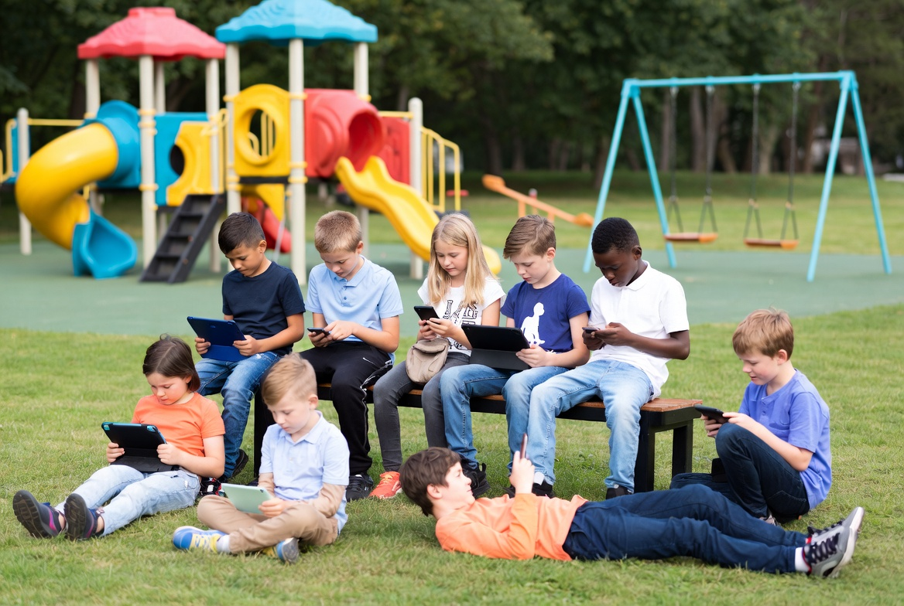

Brain Rot (em português, “apodrecimento cerebral”) é um termo que descreve o impacto negativo causado pelo consumo excessivo e acrítico de conteúdos digitais curtos, rápidos e altamente estimulantes, como TikTok, YouTube Shorts, Instagram Reels e feeds infinitos.
É como se o cérebro se acostumasse a receber estímulos constantes e superficiais, perdendo gradualmente a capacidade de concentração profunda, reflexão crítica, memória de trabalho e atenção sustentada. Não se trata de um diagnóstico médico oficial, mas de um conceito amplamente discutido em estudos sobre saúde mental, neurociência e educação.
O fenômeno está diretamente ligado à economia da atenção das grandes plataformas digitais. Seus algoritmos são projetados para maximizar o tempo de tela, liberando dopamina rápida através de notificações, curtidas e vídeos curtos. Esse modelo de negócio transforma a atenção humana em mercadoria (Zuboff, 2019).
Segundo o Cetic.br (2024), 93% das crianças e adolescentes brasileiros de 9 a 17 anos usam a internet, sendo que 81% acessam diariamente. Muitas começam antes dos 8 anos de idade.
Elas chegam à escola já imersas nesse universo digital, trazendo novos desafios para o professor: como trabalhar a atenção sustentada, o pensamento crítico e o discernimento entre informação confiável e desinformação?
O professor não deve ser contra a tecnologia, mas sim o principal mediador crítico dela. Sua formação deve capacitá-lo a ajudar os estudantes a usar as tecnologias de forma consciente, crítica e emancipadora.
Como defendem Paulo Freire (1996) e Dermeval Saviani (2021), a educação deve ser prática da liberdade e socialização do saber sistematizado, capaz de contrapor-se à fragmentação e superficialidade da cultura digital atual.